电力知识库
一起学新能源
今天分享的干货内容是“储能电站并网全流程、技术要求及相关规范(2024-2026最新版)”，推荐大家收藏学习\~


以上为部分内容展示，原文档可进入知识星球下载。
往期相关文章展示：
本号已搭建知识星球，内含 1400 + 份新能源核心设计资料，每周更新干货，支持资料代找服务。感兴趣的朋友可扫码加入，一起学习交流。

*储能系统学习点这里*

*注：《一起学储能》星球含《储能资料库》星球所有储能资料*
END
【免责声明】本文所用图片、文字如涉及作品版权问题，请及时告知，将立即删除，无任何商业用途！
小亿

亿储电气，您身边的PCS专家\~
今天咱们来聊两个在储能圈子里越来越火，但很多人依然一头雾水的词儿——AGC和AVC。
对于很多刚接触储能行业的朋友来说，这两个缩写就像打哑谜。别担心，今天这篇文章保证给你把这块硬骨头啃下来。哪怕你没有任何工科基础，看完也能出去跟人吹牛，因为咱既要专业、通俗，还得逻辑通顺！
想象一下，电网是一条不限速的高速公路，上面跑着无数辆用电的“车”。为了让所有车都能稳稳地跑，这条公路必须保持两个绝对的硬指标：
车速必须恒定在120km/h（相当于电网的频率，50Hz）；
路面的平整度必须极高，不能有坑坑洼洼（相当于电网的电压）。
这时候，风（风电）和光（光伏）这些天气多变的“司机”加入进来，一会儿猛踩油门，一会儿又突然松油，车速一下就乱套了，路面也颠簸起来。
为了稳住这条高速路，我们聪明的储能电站登场了。储能电站就像一个超级智能的“黄金右脚+路况修复机”。而指挥这个右脚怎么动的指令，就叫做AGC（自动发电控制）；指挥路况怎么修补的指令，就叫做AVC（自动电压控制）。
AGC，全称自动发电控制。在储能电站中，它是实现储能“灵活调节、快速响应、安全并网”的核心控制系统。它的核心任务是管有功功率，也就是管电站发多少电、存多少电。
通俗理解，AGC就是电网调度中心给储能电站下达的“油门/刹车”指令。
它的工作原理很有意思，大家可以想象这样一个场景：
你在高速路上开车，想定速巡航在120km/h。如果车子因为上坡（相当于电网负荷加重）速度掉到了118km/h，你会本能地补一脚油门；如果下坡太快到了122km/h，你会稍微松油门甚至带一脚刹车。
电网运行也一样。一旦大家疯狂开空调导致发电量跟不上（频率掉到50Hz以下），调度中心的AGC系统就会立刻发现，并通过专用网络给储能电站下达指令：“别歇着了，快放电！”储能接到命令，瞬间释放出储存的电能，把频率拉回50Hz。反之，如果发电太多了，AGC就命令储能：“快充电，把多余的电吃掉。”
因为储能电站具备毫秒级的响应速度和充放电双向调节能力，AGC在储能上的应用远比传统火电灵活。在储能电站中，AGC系统通过“实时监测-智能决策-精准执行-闭环反馈”的闭环逻辑，实时采集调度中心的指令曲线和电池的SOC（剩余电量），并自动将充放电任务精准分配到每一个电池簇，确保实际出力与调度计划的偏差控制在极小范围内。
对于想靠储能赚钱的老板来说，AGC格外重要。在电力辅助服务市场里，提供AGC调频辅助服务是储能电站赚取收益的核心渠道之一。
例如，长三角地区的AGC调用补偿标准为3元/兆瓦，配合AGC基本补偿标准360元/兆瓦·月，这对于大型独立储能电站来说是一笔非常可观的收入。西北地区也明确对新能源配建储能的AGC系统提出了考核要求，配建储能需按月接受AGC考核，合格率越高、收益越稳。
说完了管力气的AGC，我们再来看看管面子的AVC——自动电压控制。AVC的核心任务是管无功功率，维持电网电压的稳定。AVC的作用在于优化电网无功潮流分布，使电网趋于安全性和经济性最优的运行状态。
还是回到刚才高速路的例子：
AGC管车速，那路面的坑洼谁来管？如果路面一会儿凸起（电压太高），一会儿凹陷（电压太低），车子轻则颠簸，重则直接报废。
电网中的电压也是同理。家用电器对电压高度敏感——电压太高，烧电器；电压太低，电器不正常工作。而无功功率的过剩或不足就是导致电网电压波动的元凶。
传统上，调节电压和无功主要靠发电厂的励磁系统或专门的SVG装置。但如今，储能电站的储能变流器天生就具备强大的四象限运行能力，可以在发出有功功率的同时，灵活地发出或吸收无功功率。
当调度中心的AVC主站系统监测到某区域电压越限，就会立刻给储能电站下达指令：“给点无功，抬抬电压”或者“吃掉一些无功，把电压降下来”。储能电站通过协调控制所有PCS（储能变流器）的无功出力，就能精准调节并网点的电压。
AVC不仅是技术能力，也是并网的硬性合规要求，直接关系到电站的考核成本。以江苏省为例，储能电站如果不具备AVC功能，按照额定容量每月每万千瓦罚款1万元；AVC投运率不得低于98%，每低于1%还要每天每万千瓦追加考核12元。
好消息是，AVC服务同样能赚钱。在山东，独立储能电站提供快速调压响应，补偿标准为72元/兆瓦。在长三角，AVC的补偿标准为0.5元/兆瓦时，叠加上有偿无功调节的补偿，也能形成稳定的辅助收益。
聊完了两位主角，我们来个“终极大对比”。其实区分AGC和AVC，记住这九个字就够了：

此外，传统控制中AGC和AVC常独立运行，容易引发“顾此失彼”——AGC调整有功时可能导致电压越限，AVC补偿无功时可能加剧频率波动。因此，现代储能电站正越来越多地采用AGC/AVC协同控制策略，通过统一的能量管理平台，将有功调节与无功调节联动，实现频率和电压的同步优化。
第一，有考核才有刚需。 根据国家层面的指导，新型储能应该具备AGC和AVC功能。如果不能达标，并网主体将面临实实在在的考核和罚款。例如，西北新版“两个细则”明确对未单独配置储能AGC系统的新能源配建储能设置考核条款；江苏省更是对AVC投运率和调节合格率都设定了严格的考核标准。
第二，这是储能赚钱的核心工具。 随着电力市场化改革深入，储能电站的收益越来越依赖辅助服务市场。无论是长三角还是山东、西北，各区域的“两个细则”都在不断细化AGC和AVC的补偿标准，让储能的服务价值加速变现。
第三，市场正在爆发式增长。 据国家能源局数据，截至2025年底，全国已建成投运新型储能装机规模达到1.36亿千瓦/3.51亿千瓦时，较2024年底增长84%，与“十三五”末相比增长超40倍。在如此巨大的增量市场中，AGC和AVC正是每一座储能电站参与电网调度、赚取服务收益的数字化“大脑”和“神经中枢”。
聊了这么多，希望这篇文章能帮你彻底告别“睁眼瞎”的状态。
下次再跟同行聊天，提到AGC，你就在脑子里调取频率和油门的关键词，管的是有功功率，赚的是调频的钱。提到AVC，你就想到电压和路面平整度，管的是无功功率，既是硬性考核，也能赚取无功服务的钱。
产品推荐

稳定
1.采用第三代DSP+FPGA双核架构，运行主频和指令速度提升显著；
2.采用混合多重解耦HCMD锁相环PLL算法，有效提取电网基波分量的电压和频率，能够及时响应电网电压扰动，提高并网稳定性和鲁棒性；
3.采用分层结构设计，发热源和控制系统分层，提高系统散热性能、寿命和稳定性、IP65级防尘防水。

安全
1.采用光纤驱动技术，光信号代替电信号，控制信号和驱动信号光电高压隔离，控制系统更稳定、安全；
2.高效热管理，可选配智能风冷或液冷散热。智能风冷采用热管及冷媒散热技术，液冷为自研流道设计，高效热传递，提高功率器件散热效率。满功率输出，保障营收效益。

可扩展
1.可扩展多级模式，根据应用场景配置合适的DC/DC和PCS模块，实现多路直流源和交流源共直流母线储能系统可靠运行；
2.高、低压及功率可扩展，功能系统模块化设计，快速响应不同电压等级及功率等级的定制化
需求；支持并联工作模式；可扩展多种通讯和控制接口，支持第三方外部EMS设备。

易维护
1.模块化系统结构设计，核心模块独立装配，用户终端分钟级拆卸维修，适合工商业储充运维
场景，维护成本低;器件选型充分考虑耐久性和寿命，摒弃低成本模式，采用IGBT模块组、薄膜
电容、叠层母排等高功率性能优秀的长寿命器件；
2.故障数据云端共享，技术服务7*12小时在线。


对产品感兴趣可联系王经理：18701575571 （微同）

相关阅读：

Jin
对于一个大型储能电站来说，组网是贯穿电能传输、设备控制、安全保护、电网调度全流程的系统工程 —— 它既是电能双向流动的 “主动脉血管”，也是控制指令、状态采集的“神经网络”。一个设计合理的组网方案，能让电站长期稳定运行。 一次动力组网（电能传输脉络）和二次通讯组网（控制管理神经） 两大核心板块，两者相辅相成，缺一不可。
在常规的通讯组网中，工业以太网星型结构单交换机下联节点通常建议控制在32 台以内，工业环网单环设备数量宜控制不宜超过 64 台，传统串口总线组网节点一般不超过 16～32 台；若单网接入设备数量过多，会造成网络带宽拥堵、数据报文冲突、传输时延增大与丢包频发，导致二次系统遥测遥信失真、控制指令响应滞后，同时故障点定位困难、单点异常易引发全网瘫痪，若数量过少则会造成网络设备与端口资源闲置浪费，增加组网层级与接线复杂度，提升建设与运维成本，还会让分区控制逻辑过于零散，不利于一二次系统协同调度与高效管理。
本文以常见的100MW/200MWh 储能电站为例，介绍下系统电站的组网设计。
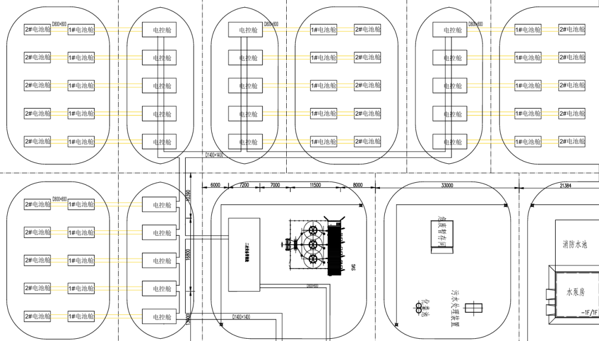
本文解析的 100MW/200MWh 储能电站，采用行业通用的模块化单元设计，也是当前大型储能项目的主流方案，核心配置如下：
总规模：100MW/200MWh，0.5CP倍率，适配电网调峰调频、峰谷套利等核心场景；
最小储能单元：共 20 个5MW/10MWh独立储能单元，每个单元包含 1 台 5MW变流升压一体机 + 2 台 5MWh 液冷电池集装箱；
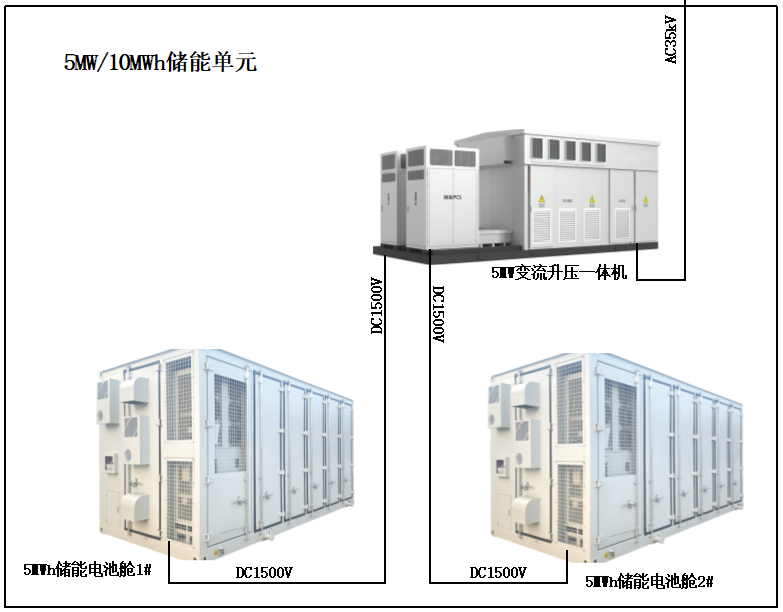
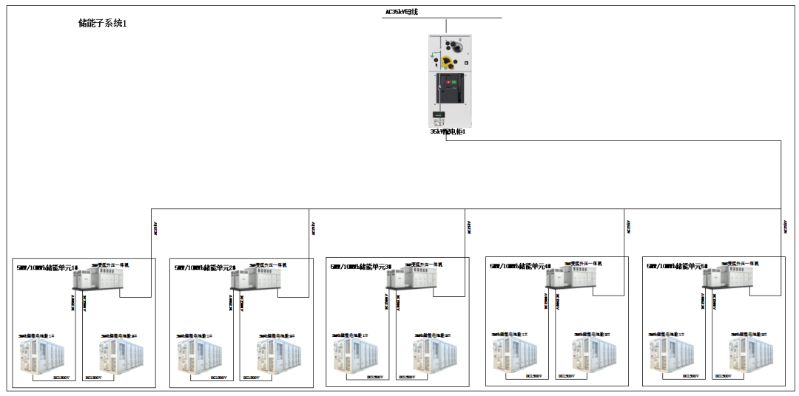
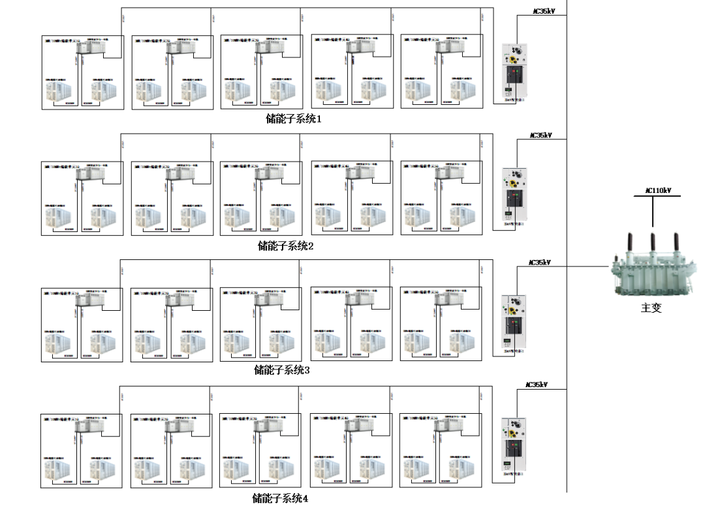
对于储能电站的二次通讯组网来说，所有核心链路均采用A/B 双网物理冗余设计，单网故障时自动无缝切换，杜绝单点故障导致的系统失控。整个二次系统的组网以一次分系统设计为依据进行分区组网，整站分为4个子系统进行组网，子系统内采用串口/以太网进行组网，系统与EMS间的信息传输采用光纤组网。系统组网主要分为三部分：BMS、PCS与EMS的组网；消防系统组网、视频监控组网。
这是整个通讯系统的核心，直接决定了储能系统的充放电控制精度与安全保护能力，行业主流分为独立组网与合并组网两种形式。系统内采用Modbus TCP/61850通讯协议。
| 组网形式 | 核心设计 | 优劣势分析 | |------------|--------------------------------------------|-------------------------------------------------------| |PCS/BMS 独立组网| 每个子系统内BMS与PCS独立组网，各自独立组网（AB网冗余，信息与控制分开组网） |优势：链路互不干扰，可靠性高，故障影响范围极小，调度灵活性强；劣势：交换机、光缆用量大，施工复杂度高，成本更高| |PCS/BMS 合并组网|每个子系统内PCS 与 BMS 混合接入同一个光纤环网，（AB冗余，信息与控制分开组网）| 优势：布线简洁，光缆与交换机用量少，施工快，成本低；劣势：链路耦合，单设备故障影响范围大，调度灵活性差 |
一个子系统的独立组网如下图：
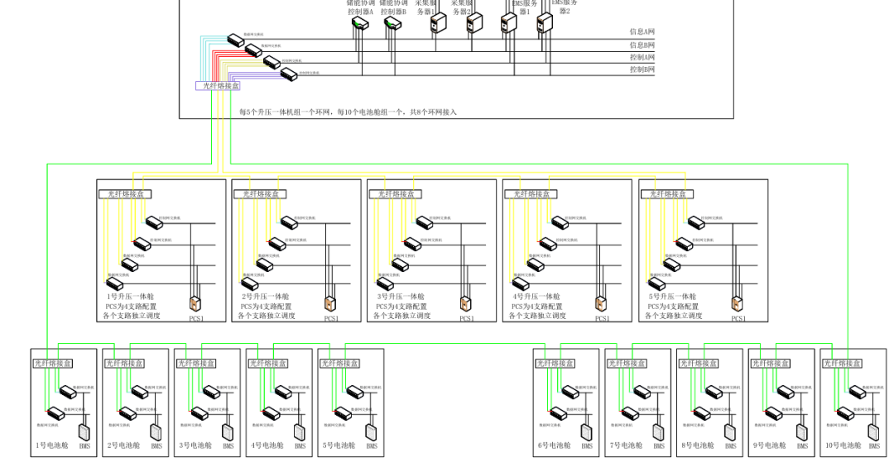
一个子系统的合并组网如下图：
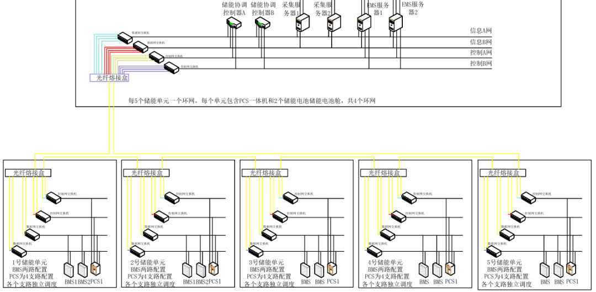
组网形式
舱级：每个电池舱的消防控制器对舱内的舱级+PACK各类探测器、气体灭火装置、刺破阀、PCS的烟温感等进行集中控制（舱内相关之前有讲，有需要可参考储能气体消防系统全解析，这里就不过多赘述）
储能子系统：每个子系统内的10台消防控制器各自通过 CAN 光纤转换器送出电池舱后，采用单模光缆进行环形组网接入 CAN 光纤转换器后，通过CAN接入消防总机，双链路冗余设计；
站级：站内四个消防分区，分别接入一个CAN 光纤转换器后接入消防总机的4个独立的CAN口
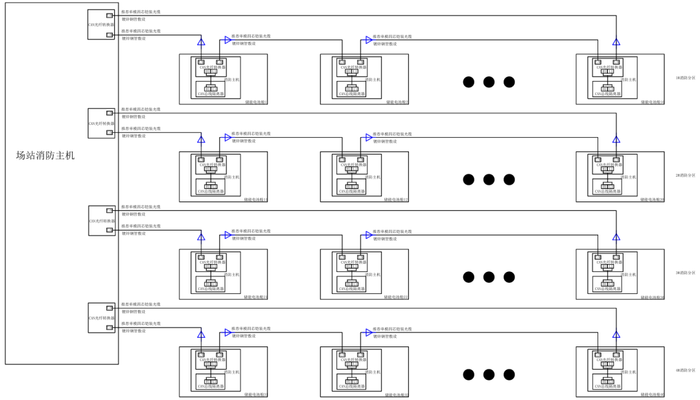
组网形式
单元组网：视频监控的组网，主要是各舱内的摄像头，每个储能单元（1个PCS一体机+2个电池舱）内的所有摄像头接入同一台交换机；
子系统组网：每个子系统内的5个储能单元的视频交换机经光纤熔接盒输出后，进行环网，经光纤传输后接入电站视频接口系统的一个接口。
站级：4个子系统分别以一个光纤环网接入站级视频监控主机。
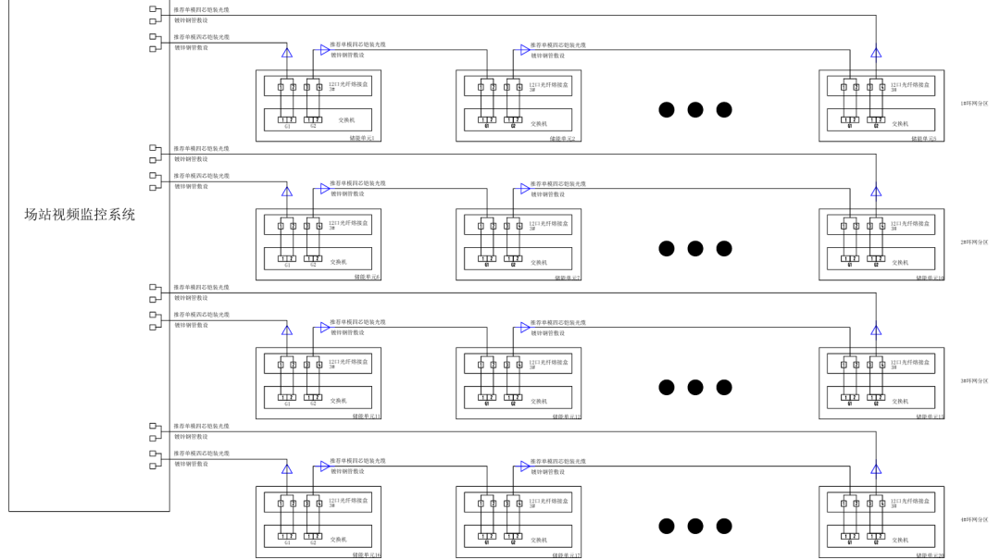
核心控制链路双网双冗余，消防、急停、停机等安全保护必须配置独立硬接点回路，杜绝单点故障导致系统失控；
控制网、信息网、调度网、视频网分层分区、物理隔离，避免电磁干扰与网络安全风险；
每个储能单元、每个支路独立组网、独立调度，故障可快速隔离，不影响其他单元正常运行；
调度组网必须严格遵循电网要求，采用标准规约，满足电力监控系统安全防护规定；
强弱电严格分开敷设，通讯线缆采用屏蔽型，做好接地、浪涌防护，避免强电磁干扰导致的信号失真、误动作；
所有链路预留端口、纤芯、带宽，方便后期运维、设备更换与容量扩容。
好的组网方案，是一次动力组网与二次通讯组网的完美结合 —— 既要让电能的 “主动脉” 畅通无阻，实现能量的双向平稳流动；也要让控制的 “神经网络” 灵敏可靠，实现毫秒级的采集、控制与保护。
---
欢迎关注、点赞、收藏！知识星球技术资料每日持续更新中,欢迎加入深入学习了解更多储能专业知识，加入即可全部下载！（已超500+，每日更新10+）
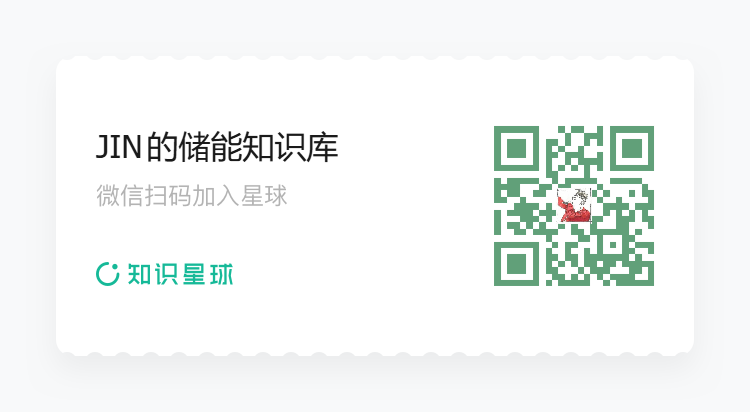
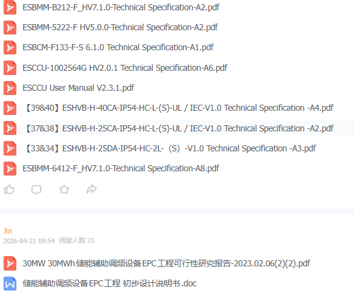
海外工程师谈变压器


亿储电气

亿储电气，您身边的PCS专家\~


产品推荐

稳定
1.采用第三代DSP+FPGA双核架构，运行主频和指令速度提升显著；
2.采用混合多重解耦HCMD锁相环PLL算法，有效提取电网基波分量的电压和频率，能够及时响应电网电压扰动，提高并网稳定性和鲁棒性；
3.采用分层结构设计，发热源和控制系统分层，提高系统散热性能、寿命和稳定性、IP65级防尘防水。

安全
1.采用光纤驱动技术，光信号代替电信号，控制信号和驱动信号光电高压隔离，控制系统更稳定、安全；
2.高效热管理，可选配智能风冷或液冷散热。智能风冷采用热管及冷媒散热技术，液冷为自研流道设计，高效热传递，提高功率器件散热效率。满功率输出，保障营收效益。

可扩展
1.可扩展多级模式，根据应用场景配置合适的DC/DC和PCS模块，实现多路直流源和交流源共直流母线储能系统可靠运行；
2.高、低压及功率可扩展，功能系统模块化设计，快速响应不同电压等级及功率等级的定制化
需求；支持并联工作模式；可扩展多种通讯和控制接口，支持第三方外部EMS设备。

易维护
1.模块化系统结构设计，核心模块独立装配，用户终端分钟级拆卸维修，适合工商业储充运维
场景，维护成本低;器件选型充分考虑耐久性和寿命，摒弃低成本模式，采用IGBT模块组、薄膜
电容、叠层母排等高功率性能优秀的长寿命器件；
2.故障数据云端共享，技术服务7*12小时在线。


EETRUE 60kW-300kW双向DCDC功率变换器

产品特点
配置灵活, 多极模式可扩展，可采用共直流母线结构，支持1000V高压直流母线
DC/DC双向能量流动，直流输入侧可采用恒流模式，最大电流为300A
高效热管理，采用热管及分层设计
宽输入/输出直流电压范围，兼容200Vdc-1000Vdc系统
满足新能源储能电池、光伏组件、新能源汽车接入可配置新能源汽车V2G、MPPT、移动储能智能充电机器人直流快充等功能
模块化设计，维护更加便捷

电路框图
对产品感兴趣可联系王经理：18701575571 （微同）

相关阅读：

储能小牛马
在提及磷酸铁锂储能系统参与一次调频时，大部分业内同仁都会认为一次调频对锂电储能系统寿命影响很大，无非有以下几方面原因：
高倍率充放电，加剧极化
每日上千次浅充浅放，充放电转换频繁，大幅加速电池老化
发热集中，无冷却静置时间，局部高温加速电解液分解
在没有接触过山西一次调频市场前，我也是上述观点的认同者和践行者，认为在一次调频市场中，飞轮/超容+锂电是最优解。近期，仔细想了下，有上述认知的原因主要是：
在独立储能参与一次调频辅助服务之前，主要由火电机组参与一次调频服务；受限于火电机组的固有不足——响应慢、调频会损伤设备、调节合格率不达标等，火储联合调频应运而生。
在火储联合调频项目中，储能配置功率的主要依据为火电机组调频需要动作的功率，而该功率是按火电机组的额定功率进行计算的。根据《GB/T 40595-2021》，火电机组一次调频死区为±0.033HZ,，一次调频转速不等率为4%\~5%（每变化1HZ，功率变化4%\~5%）；假定有效的频率变化量为0.01HZ（扣除死区后），那么对于300MW火电机组调频需要动作的功率为：
注：业内通常会按照火电机组功率的3%去配置储能系统，同时配置1h或者2h。
在这种配置逻辑下，储能系统常按50%额定或100%额定功率在运行，且使用的又是高倍率电芯；在日均成百上千次频繁大功率充放电情况下，电池衰减确实会很严重。所以，飞轮储能的高循环寿命优势就体现出来了。
那么对于山西独立储能电站参与一次调频辅助服务，磷酸铁锂储能系统寿命衰减是否一如火储联合调频？答案是否定的，不能等同看待。下面做下具体分析。
如下为储能电站20分钟内一次调频的功率变化量，可以看到单次一次调频有功变化量约为2MW\~3MW；当初始功率为0时，叠加调频功率变化量，储能电站有功出力仅为2\~3MW，远低于系统额定功率。
实际动作情况：一小时动作100次左右，日均1500次\~2500次；
注：本文所列数据仅供寿命分析用。
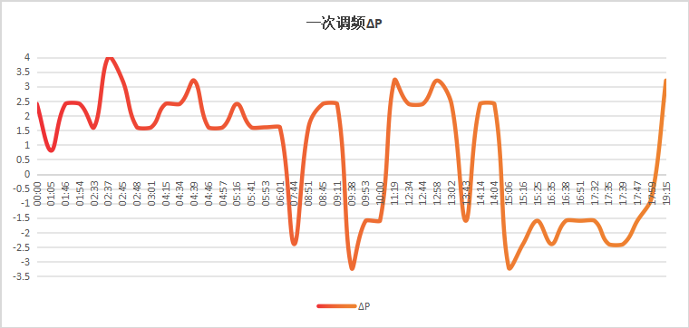
假设某电站建设规模为100MW/200MWh：
若初始功率P0为0，一次调频动作后，电站出力功率仅为2%\~3%PN；
山西一次调频参与容量最大为50MW，若当天仅参与一次调频辅助服务，电站出力功率最大为50%PN，出力功率范围在-50%PN\~50%PN之间波动；
若当天同时参与一次调频和现货交易（50MW现货+50MW一次调频），那么当天电站出力功率最大为100%PN，出力功率范围在-100%PN\~100%PN之间波动；
一次调频功率变化量只有2\~3MW，那为什么一次调频时出力功率能达到50MW呢？
其原因是：
根据山西细则要求，每一次调频动作需要4s升功率爬坡+4s降功率爬坡，若在这个期间某一时刻触发了新的一次调频动作，那么新的这次调频动作的初始P0就是该时刻的初始功率；若在连续时段内，电网频率不断朝单一方向变化，电站出力功率就会不断叠加，直至达到最大功率（如50MW）。
考虑到收益最大化，对于配置功率超过50MW的储能电站来说，需要同时参与一次调频和现货或者说是二次调频和现货；本文主要考虑一次调频+现货，分析如下：
我取了2026/5/11日当天山西电力现货价格数据，并根据价格波峰波谷拟定100MW/200MWh储能电站现货交易出力计划，大致如下（主要做分析用，实际出力曲线不会这么简单粗暴哈）：
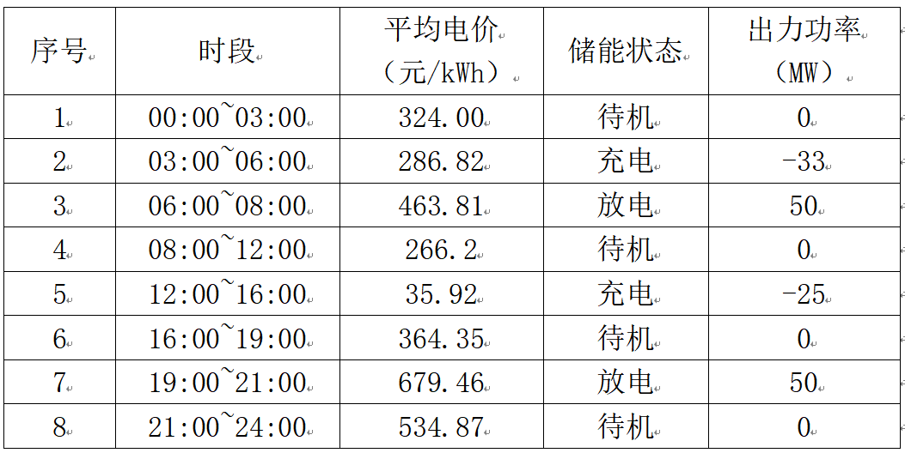
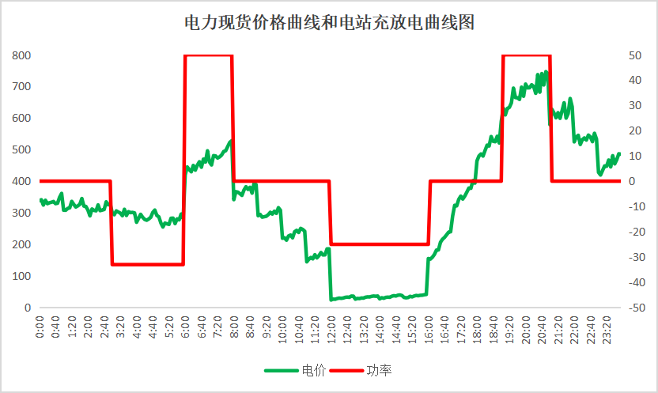
注：现货最大功率按50MW申报，主要是预留50MW一次调频容量。
在一次调频未动作期间，储能电站的出力功率在25%\~50%之间，并未达到额定功率运行，在这种情况下，是更有利于电池寿命的。目前，磷酸铁锂电池系统能达到的一个寿命水平为：25℃、90%DOD、0.5P工况下，循环次数为6000次@80%EOL。那么在0.25P下的循环次数会更高。
在一次调频动作期间，一次调频动作出力会与目前储能电站出力叠加，根据储能在充放电还是待机状态、储能一次调频动作功率大小，会有下述几种情况：
情况一
在储能充放电时段，一次调频动作频繁动作，但每一次动作均完成4s增功率和4s降功率爬坡，这就意味着每一次的一次调频动作的初始P0都是一致的，实际出力功率围绕P0波动，波形如下：
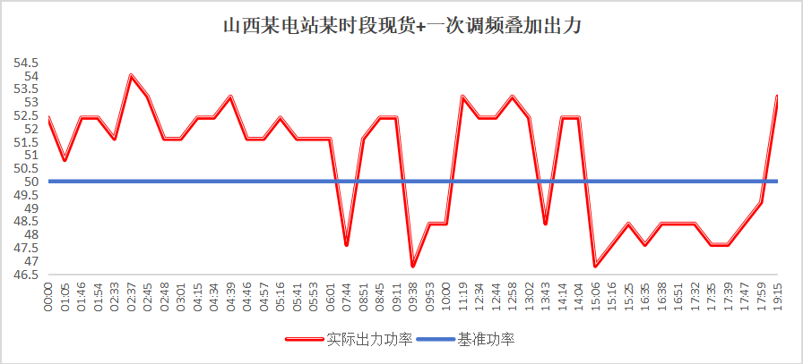
在这种情况下，一次调频动作对锂电储能系统寿命影响相当有限（功率小幅波动，且无功率反向）
情况二
在储能充放电时段，一次调频动作频繁动作，但一次调频动作不断叠加，最高叠加至50MW，波形如下：
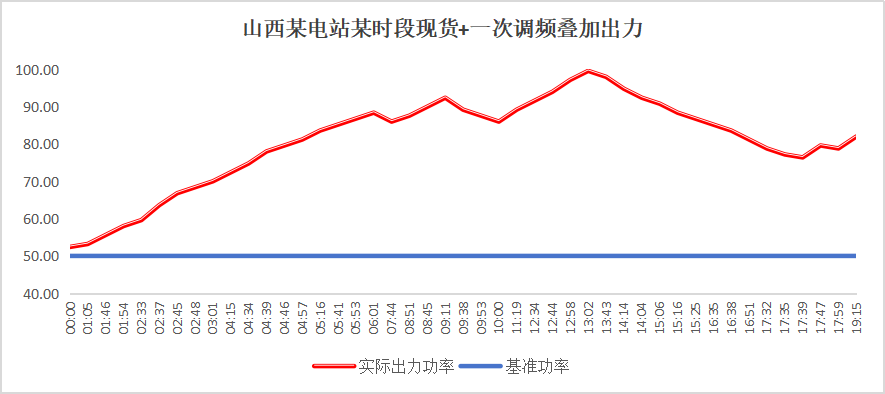
在这种情况下，储能出力功率缓慢爬升并接近额定，锂电系统的寿命会比按50%PN出力时的寿命要短；但项目在前期在测算时，就是按100%PN出力（0.5P）下的循环次数做的测算，从这个角度来看，参与一次调频并没有降低预期系统寿命；甚至可能说，50MW现货+50MW一次调频时锂电的寿命比按100%PN参与现货的寿命更高。
情况三
在储能待机时段，一次调频动作频繁动作，但每一次动作均完成4s增功率和4s降功率爬坡，这就意味着每一次的一次调频动作的初始P0都是一致的（0），实际出力功率围绕P0波动，波形如下：
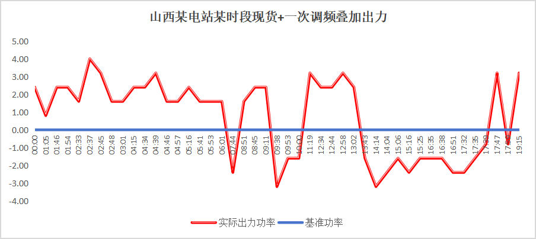
相比仅参与现货，在这种情况下的锂电储能系统运行寿命会下降（仅参与现货时候，该时段处于待机状态），但频繁小功率充放电对寿命影响有限，后面我们再做折算。
情况四
在储能待机时段，一次调频动作频繁动作，但一次调频动作不断叠加，最高叠加至50MW，波形如下：
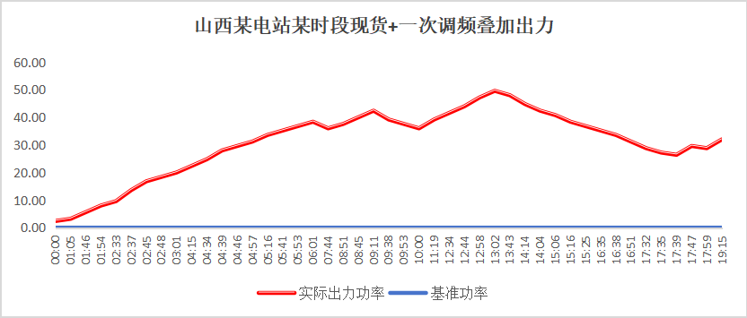
相比仅参与现货，在这种情况下的锂电储能系统运行寿命会下降（仅参与现货时候，该时段处于待机状态），后面我们再做折算。
情况五
在储能待机时段，一次调频动作频繁动作且频率在基准频率上下跳动，进而较大功率充电放电转换，波形如下：
该工况下的锂电储能系统运行寿命会下降。
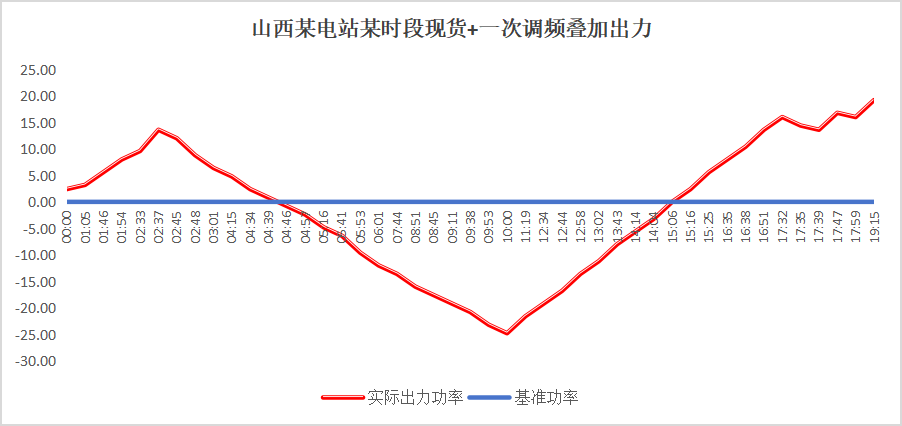
先来总结一组数据，山西一次调频实际动作情况：
一小时动作100次左右，日均1500次\~2500次；
对于50MW调频容量，日均充电量和放电量均在70MWh\~110MWh之间（非实际调研数据，仅供参考）。
山西地区频率波动最频繁的时段主要在晚高峰爬坡阶段（光伏出力下降+负荷快速上升）、午间新能源大发阶段，也就意味着在这两个时段的一次调频动作次数多、调频里程长、调节电量高；而根据前期现货交易充放电计划，这两个阶段储能分别在放电和充电，当叠加一次调频后，无非增加了储能的放电功率和充电功率，实际对前期测算寿命影响不大。所以影响寿命的主要是待机时候一次调频动作行为。
接下来，主要分析待机时刻的调频动作对寿命的影响。
由于没有24h的一次调频动作数据，我们不妨按110MWh充电量及放电量、24h平均计算待机时刻的充放电量数据：
待机时长：13h，折算充电量60MWh、放电量60MWh；（根据上述分析，在待机时段，一次调频动作次数是低于充放电阶段的，按该方式折算，其实结果是偏大的）
假设充电和放电时段各一半，也就是说充电6.5h，放电6.5h，那么平均充放电功率约为9.23MW，为9.23%PN。
其实，关于等效循环次数的折算过程是很复杂的，循环次数和充放电深度比例的关系也非简单的线性关系，循环次数同时还和充放电功率大小、环境温度相关，也非简单线性关系，下次再做详细的技术分析了，本文先简单从定性角度做下分析。
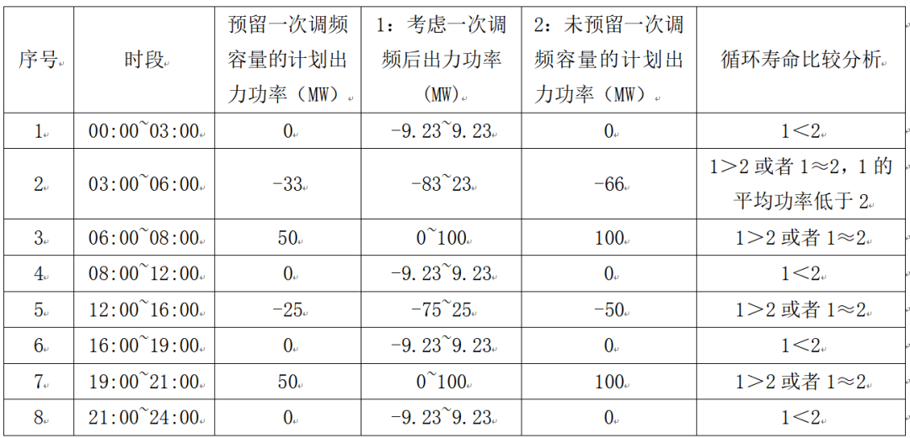
注：按100MW/200MWh独立储能电站考虑，上文考虑一次调频后的出力功率为假设值，仅供参考哈。
目前，业内关于循环次数的折算大多都是按等效放电量进行折算的，如在同一DOD工况下：循环次数=总放出电量/额定容量。
按该方式折算如下：
基准值：100MW/200MWh仅参与现货交易，按日2次循环计（两充两放）；
折算值：
按50MW现货交易+50MW一次调频总放电量考虑，简单折算为2.55次；
在计划充放电时段，现货+一次调频就按100%PN考虑，那么日等效循环次数是2次；待机时段的一次调频按60MWh放电量折算后循环次数为0.3次，总计2.3次。
若按年运行天数按300天，10年总计循环次数6000次（日均两充两放）来计算的话，当参与一次调频时，在7.84年就达到6000次循环了；相比仅参与现货，寿命衰减约21.4%。
总的来说，对于山西而言，磷酸铁锂独立储能电站参与一次调频辅助服务会导致系统寿命缩短，但远没有业内所提及的那么夸张（如4年内就达到寿命终点）。
那么，考虑到磷酸铁锂的低成本+一定的寿命衰减，飞轮储能的高成本+高循环次数真的有那么大的优势吗？各位见仁见智了。
若涉及到成本对比分析的话，简单的话就是：
对于拟建设规模为100MW/200MWh的储能电站，考虑到参与一次调频后的寿命衰减问题，可选择配置为：
容量超配1.214倍，拟建设100MW/245MWh，按0.58元/Wh造价，总成本约1.42亿元；
50MW飞轮+50MW/100MWh磷酸铁锂储能，飞轮按4元/MW造价估计（估计数据，供参考），总成本约2.58亿元；
20MW飞轮+80MW/160MWh磷酸铁锂储能，总成本约1.728亿元；
往期回顾
【求真—山西一次调频】飞轮+锂电混合储能真的有优势吗（一）？
【求真—山西一次调频】飞轮+锂电混合储能真的有优势吗（二）？
🔍 关注【储能小课堂】不定期分享储能干货
👇 点击下方一键关注，不错过硬核内容
版权声明 · 转载规范
本公众号所有原创内容，均受著作权法保护。
未经本账号授权，任何平台、个人及机构不得擅自转载、摘抄、剪辑、篡改本文内容用于商业用途；
非商业个人转载，需提前私信后台申请授权，转载时需标注原文作者及本公众号完整来源；
严禁洗稿、拼接、二次篡改原创内容，一经发现，将依法追究侵权责任。
原创深耕不易，恳请各位尊重创作者劳动成果，合作共赢。